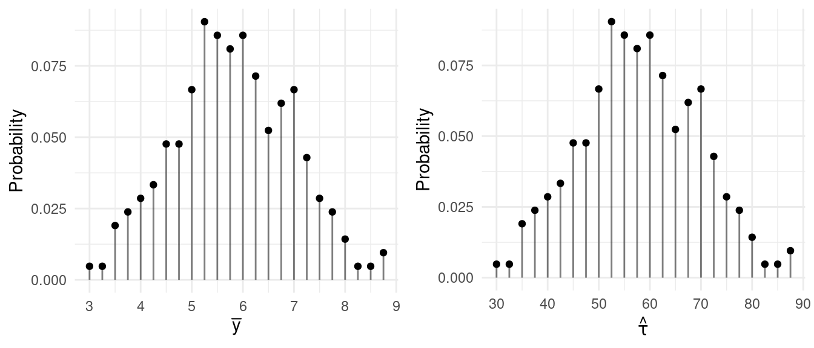

You can also download a PDF copy of this lecture.
| Sample | \(\hat\tau\) | \(\bar{y}\) |
|---|---|---|
| \(\{\mathcal{E}_{1},\mathcal{E}_{2}\}\) | 6 | 1.5 |
| \(\{\mathcal{E}_{1},\mathcal{E}_{3}\}\) | 6 | 1.5 |
| \(\{\mathcal{E}_{1},\mathcal{E}_{4}\}\) | 16 | 4.0 |
| \(\{\mathcal{E}_{2},\mathcal{E}_{3}\}\) | 8 | 2.0 |
| \(\{\mathcal{E}_{2},\mathcal{E}_{4}\}\) | 18 | 4.5 |
| \(\{\mathcal{E}_{3},\mathcal{E}_{4}\}\) | 18 | 4.5 |
| \(\bar{y}\) | \(\hat\tau\) | Probability |
|---|---|---|
| 1.5 | 6 | 1/3 |
| 2.0 | 8 | 1/6 |
| 4.0 | 16 | 1/6 |
| 4.5 | 18 | 1/3 |
The figures below show the sampling distributions of \(\bar{y}\) and \(\hat\tau\).
Example: Suppose now we have a population of \(N\) = 10 elements where the target variable values are 2, 3, 3, 4, 5, 6, 6, 9, 10, and 10. The table below shows the (abbreviated) sample space for a simple random sampling design with \(n\) = 4 as well as the values of the estimators \(\hat\tau\) and \(\bar{y}\) for each sample.| Sample | \(\hat\tau\) | \(\bar{y}\) |
|---|---|---|
| \(\{\mathcal{E}_{1},\mathcal{E}_{2},\mathcal{E}_{3},\mathcal{E}_{4}\}\) | 30 | 3 |
| \(\{\mathcal{E}_{1},\mathcal{E}_{2},\mathcal{E}_{3},\mathcal{E}_{5}\}\) | 32.5 | 3.25 |
| \(\{\mathcal{E}_{1},\mathcal{E}_{2},\mathcal{E}_{3},\mathcal{E}_{6}\}\) | 35 | 3.5 |
| \(\{\mathcal{E}_{1},\mathcal{E}_{2},\mathcal{E}_{3},\mathcal{E}_{7}\}\) | 35 | 3.5 |
| \(\{\mathcal{E}_{1},\mathcal{E}_{2},\mathcal{E}_{3},\mathcal{E}_{8}\}\) | 42.5 | 4.25 |
| \(\{\mathcal{E}_{1},\mathcal{E}_{2},\mathcal{E}_{3},\mathcal{E}_{9}\}\) | 45 | 4.5 |
| \(\{\mathcal{E}_{1},\mathcal{E}_{2},\mathcal{E}_{3},\mathcal{E}_{10}\}\) | 45 | 4.5 |
| \(\{\mathcal{E}_{1},\mathcal{E}_{2},\mathcal{E}_{4},\mathcal{E}_{5}\}\) | 35 | 3.5 |
| \(\vdots\) | \(\vdots\) | \(\vdots\) |
| \(\{\mathcal{E}_{7},\mathcal{E}_{8},\mathcal{E}_{9},\mathcal{E}_{10}\}\) | 87.5 | 8.75 |
| \(\bar{y}\) | \(\hat\tau\) | Probability |
|---|---|---|
| 3.00 | 30.0 | 0.0047619 |
| 3.25 | 32.5 | 0.0047619 |
| 3.50 | 35.0 | 0.0190476 |
| 3.75 | 37.5 | 0.0238095 |
| 4.00 | 40.0 | 0.0285714 |
| 4.25 | 42.5 | 0.0333333 |
| 4.50 | 45.0 | 0.0476190 |
| 4.75 | 47.5 | 0.0476190 |
| 5.00 | 50.0 | 0.0666667 |
| 5.25 | 52.5 | 0.0904762 |
| 5.50 | 55.0 | 0.0857143 |
| 5.75 | 57.5 | 0.0809524 |
| 6.00 | 60.0 | 0.0857143 |
| 6.25 | 62.5 | 0.0714286 |
| 6.50 | 65.0 | 0.0523810 |
| 6.75 | 67.5 | 0.0619048 |
| 7.00 | 70.0 | 0.0666667 |
| 7.25 | 72.5 | 0.0428571 |
| 7.50 | 75.0 | 0.0285714 |
| 7.75 | 77.5 | 0.0238095 |
| 8.00 | 80.0 | 0.0142857 |
| 8.25 | 82.5 | 0.0047619 |
| 8.50 | 85.0 | 0.0047619 |
| 8.75 | 87.5 | 0.0095238 |
The figures below show the sampling distributions of \(\bar{y}\) and \(\hat\tau\). 
If we have a discrete random variable \(X\), then the mean of that random variable (also called its expectation or expected value) is \[ E(X) = \sum_x xP(x), \] where the \(x\) below \(\sum\) indicates that we sum over all values of \(x\).
Example: We can easily confirm that based on the sampling distributions for the smaller population above that \(E(\bar{y}) =\) 3 and \(E(\hat\tau) =\) 12.
But there is a shortcut if we use simple random sampling. For any simple random sampling design, it can be shown that \(E(\bar{y}) = \mu\) and \(E(\hat\tau) = \tau\). When the mean of an estimator equals what is being estimated, then we say that the estimator is an unbiased estimator (otherwise the estimator is a biased estimator).1
Warning: We have discussed two distinct means here: the population mean (\(\mu\)), and the mean of an estimator — e.g., \(E(\bar{y})\) and \(E(\hat\tau)\). Don’t confuse them!
If we have a discrete random variable \(X\), then the variance of that random variable is \[ \text{V}(X) = \sum_x [x - E(X)]^2P(x). \] Example: We can easily confirm that based on the sampling distributions for the smaller population above that \(\text{V}(\bar{y}) \approx\) 1.83 and \(\text{V}(\hat\tau) \approx\) 29.33.
It can be shown that under simple random sampling that the variances can be computed as \[ \text{V}(\bar{y}) = \left(1 - \frac{n}{N}\right)\frac{\sigma^2}{n} \ \ \ \text{and} \ \ \ \text{V}(\hat\tau) = N^2\left(1 - \frac{n}{N}\right)\frac{\sigma^2}{n}, \] where \(\sigma^2\) is the population variance \[ \sigma^2 = \frac{1}{N-1}\sum_{i=1}^N(y_i - \mu)^2, \] and where \(\mu\) is the population mean.2
Example: For the smaller population above \(\sigma^2 =\) 7.33, and for the larger population \(\sigma^2 \approx\) 8.84. What are \(\text{V}(\bar{y})\) and \(\text{V}(\hat\tau)\) for each design?
Warning: We’ve discussed two distinct variances here: the population variance (\(\sigma^2\)) and the variance of an estimator — e.g., \(\text{V}(\bar{y})\) and \(\text{V}(\hat\tau)\). Don’t confuse them!
How do \(n\) and \(N\) affect the variance of these estimators?
The finite population correction (FPC) is the term \(1 - n/N\) in \[ \text{V}(\bar{y}) = \left(1 - \frac{n}{N}\right)\frac{\sigma^2}{n} \ \ \ \text{and} \ \ \ \text{V}(\hat\tau) = N^2\left(1 - \frac{n}{N}\right)\frac{\sigma^2}{n}. \] The term \(n/N\) is the sampling fraction (i.e., the fraction of elements in the population that are in the sample).
When is the finite population correction largely “irrelevant” to the variance of \(\bar{y}\) or \(\hat\tau\)?
A census is when every element in the population is included within the sample so that \(n = N\). What happens to the variance of our estimators in a census?
In practice we sometimes do not know \(N\). What can we do in these situations?
The proof that \(\hat\tau\) is unbiased is not very complicated. We need to show that \(E(\hat\tau) = \tau\). Note that we can write \(\hat\tau\) a different way as \[ \hat\tau = \frac{N}{n}\sum_{i=1}^N Z_iy_i \] where \(Z_i = 1\) if the \(i\)-th element in the population is included in the sample, and \(Z_i = 0\) otherwise. Now we need to show that \[ E(\hat\tau) = E\left(\frac{N}{n}\sum_{i=1}^NZ_iy_i\right). \] From the properties of expectations we can write this as \[ E(\hat\tau) = \frac{N}{n}\sum_{i=1}^NE(Z_i)y_i. \] Now \(Z_i\) has what is sometimes called a Bernoulli distribution, and it can be shown that \(E(Z_i) = P(Z_i = 1)\) which we know is the inclusion probability, \(n/N\), since \(Z_i = 1\) if and only if the \(i\)-th element is included in the sample. So we have \[ E(\hat\tau) = \frac{N}{n}\sum_{i=1}^N\frac{n}{N}y_i = \sum_{i=1}^N y_i = \tau. \] Note that \(\sum_{i=1}^N \frac{n}{N} y_i = \frac{n}{N}\sum_{i=1}^N y_i\). Also it can be shown that this result implies that \(E(\bar{y}) = \mu\).↩︎
The proof that these are the variances of \(\bar{y}\) and \(\hat\tau\) are a bit more involved than that of the unbiasedness of \(\bar{y}\) and \(\hat\tau\), but I can show them to you if you are interested. Some textbooks will define \(\sigma^2\) by dividing by \(N\) instead of \(N-1\). This can be done but it changes the formulas for \(V(\bar{y})\) and \(V(\hat\tau)\) in a way that I find awkward for later developments. In terms of our interpretation of \(\sigma^2\) this is inconsequential since we rarely care about \(\sigma^2\) in isolation and the difference between \(N\) and \(N-1\) is very small when \(N\) is large which is frequently the case in survey sampling.↩︎